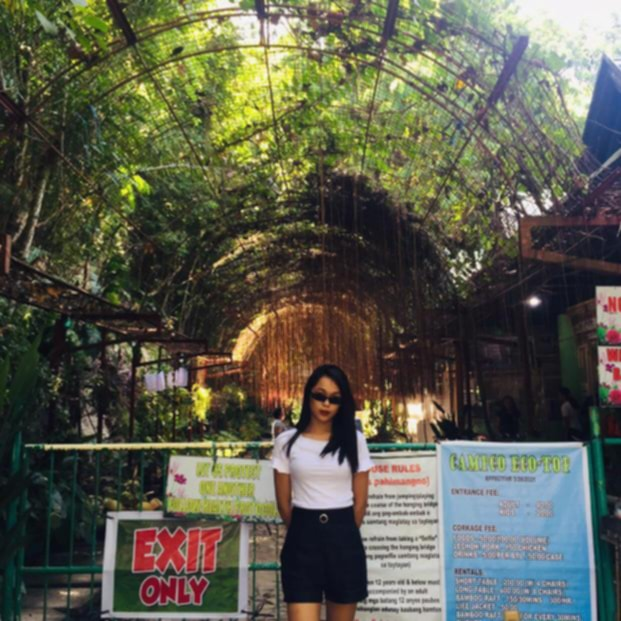
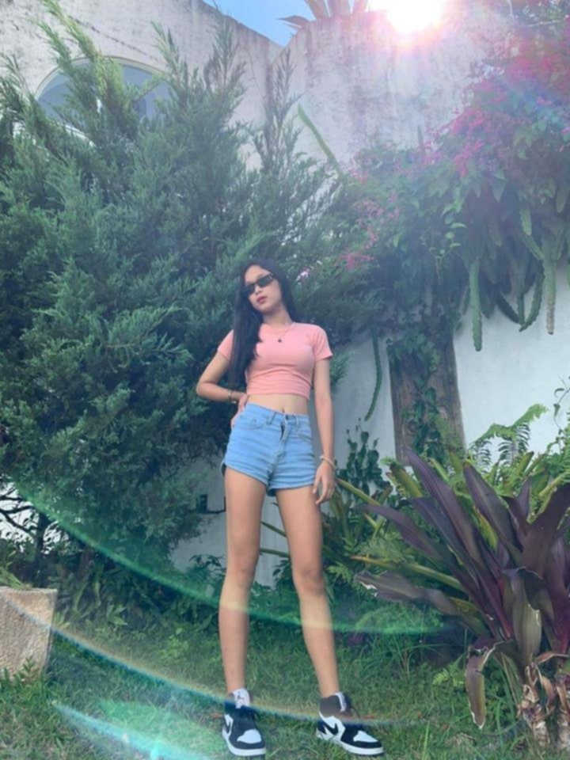
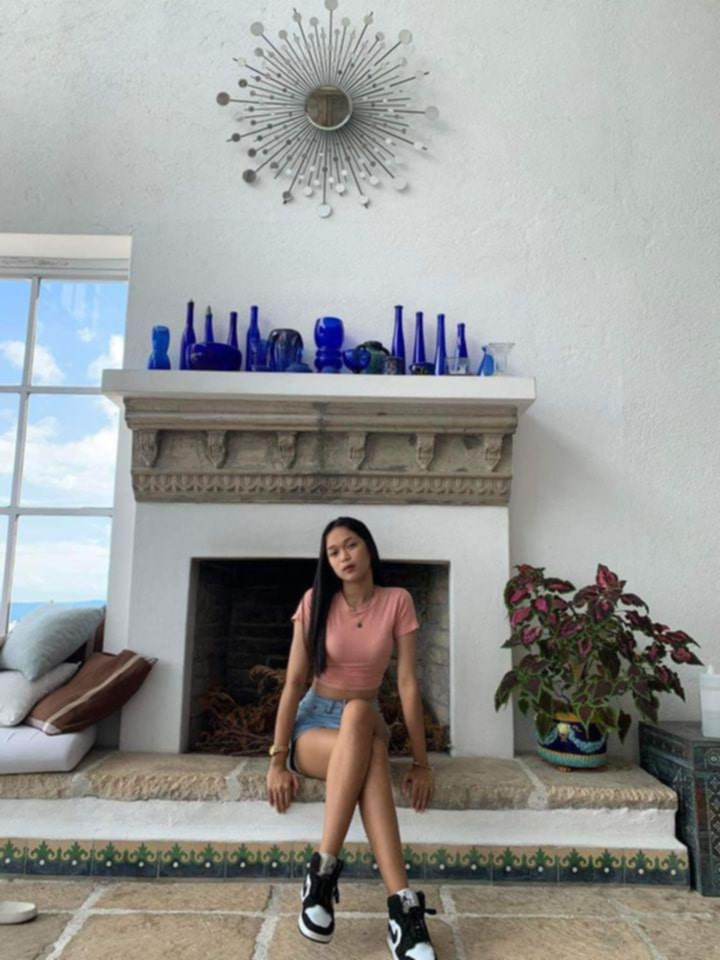

Sharing my thoughts, ideas, and experiences
Posted on October 29, 2024
Hi, I'm Suzette Bermas. I'm a warm and enthusiastic individual with a passion for life's simple joys.
In my free time, I enjoy exploring nature, reading fiction novels, and trying out new recipes in the kitchen.
I'm also a creative soul, fond of painting and playing the guitar. I believe that life is a beautiful adventure,
and I'm excited to share mine with others.
Posted on October 30, 2024
I'm currently studying Bachelor of Science in Information Technology at Arellano University. I'm driven to succeed and committed to making a positive impact in my community.
When I'm not hitting the books, you can find me spending time with loved ones, trying out new restaurants, or practicing yoga.
I'm grateful for the support of my family and friends, who encourage me to pursue my dreams.
Posted on November 1, 2024
"Love is a beautiful mystery, and I'm open to experiencing it.
I value meaningful connections and deep conversations. In a partner, I look for kindness, empathy, and a sense of humor.
Outside of relationships, I'm fascinated by art, music, and culture. I enjoy attending concerts, visiting museums, and learning about different perspectives.
Ultimately, I hope to find someone who shares my passions and values, and with whom I can explore life's wonders."